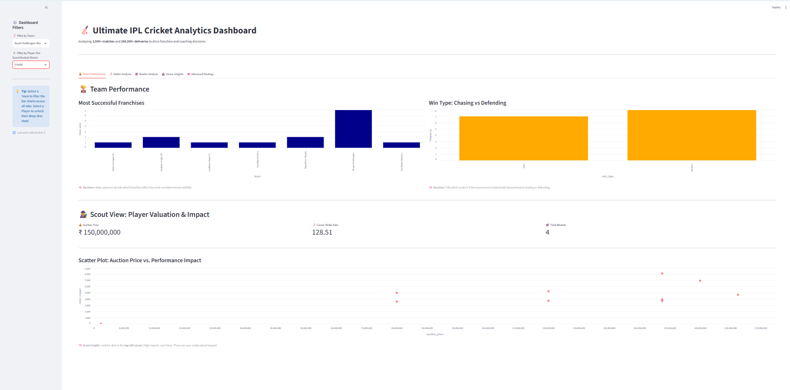

I am an MBA Tech in Data Science student at NMIMS'
Mukesh Patel School of Technology, Management and
Engineering (Batch 2024–29).
Data Science helps me analyse patterns that are often
overlooked and cannot be understood simply by looking
at the data. My goal in studying Data Science is to
pursue Sports Analytics in the future.
I absolutely LOVE cricket. Other than that, I like
listening to music, driving, travelling and sitting
at the beach to clear my mind.
🏏 CRICKET FIRST✦ DATA NERD♫ ALWAYS ON AUX↗ CHASING THE NEXT ADVENTURE
A little cricket, a little curiosity, and a lot of heart.
01 / THE PERSON BEHIND THE WORK
THE PAVILION / EST. AGE 2 🏏
Six years on the field. A lifetime of lessons.
✳A little data. A lot of cricket.
18 forever. Six years of competitive cricket. The dream now? See the game through data.
A little more about me.
Cricket has been a huge part of my life for as long as
I can remember. Having been around the game since I
was two and having played competitive cricket for six
years, I've learnt that the game is about much more
than what happens on the field. In fact, I believe
the actual game is played off it.
And of course, there's Virat Kohli. Beyond his batting,
it's his passion, intensity, discipline and never-give-up
attitude that I admire the most. Watching him has only
strengthened my belief that cricket is as much a game
of mindset and determination as it is of skill.
Cricket has taught me resilience, patience,
perseverance and the importance of staying calm
under pressure. More than anything, it has taught
me that things don't always go according to plan,
and what matters is how you respond. Ever since
my journey on the field ended, my journey off the
field began, as I started chasing my dream of
becoming a sports analyst. After all, so much of
the game is first played on the drawing board
before it unfolds on the field.
Beyond cricket, I'm someone who enjoys exploring
different places, taking part in adventure activities
and making memories along the way. I value the
experiences that teach me something, the people
I meet and the little moments that often end up
meaning the most. Whether it's taking on a new
challenge, learning something completely unfamiliar
or simply spending time doing what I love, I believe
there's always something to take away from every
experience.
I truly believe that the little things in life are
often taken for granted, when they're actually
the things we should cherish the most.
THE PLAYER PROFILE / IKS
The Ishita Scoreboard.
Some things are better explained in numbers.
Here's my innings so far.
🏏 PLAYER CARD / IKS
ISHITA PREMIER LEAGUE
PLAYER PROFILE
ON THE FIELD & BEYOND
ISHITA KAUR SAHNI
Cricket enthusiast. Data explorer. Always learning.
18FOREVER
0YEARS OF COMPETITIVE CRICKET
0FEATURED COMPLETED PROJECTS
0RESEARCH COMPETITION WIN
∞CURIOSITY & AMBITION
02 / SELECTED WORK
Projects & explorations.
BUILT WITH CURIOSITY ⚡
From cricket analytics to computational research, these projects
reflect my interest in using technology to explore questions,
discover patterns and build meaningful solutions.

01 / DATA ANALYTICS & DEVELOPMENT
IPL Sports Analytics & DBMS
Developed an IPL Analytics application as part of a
four-member team for our Database Management Systems
coursework, integrating data processing, relational
database management and interactive visualisation into
a unified platform.
The project involved organising and analysing historical
IPL data, developing a relational database using SQLite,
connecting it to a FastAPI backend and building an
interactive Streamlit dashboard. Using Python, Pandas
and Plotly, we explored player performances, team
statistics and match-related trends to make cricket
data more accessible and meaningful.
This project strengthened my understanding of end-to-end
data-driven application development while allowing me to
explore the intersection of technology, statistical
analysis and sports analytics.
Developed an interactive music generation application
using Markov Chains, exploring how stochastic processes
and probability-based models can be applied to musical
composition.
The project uses a hierarchical Markov Chain architecture
to model transitions between musical elements, including
melody, rhythm and chord progressions. By incorporating
transition probabilities and temperature scaling, the
system generates multi-track MIDI compositions with
varying levels of musical structure and randomness
across 11 genres.
Built using Python and Streamlit, the application
demonstrates how mathematical modelling can be translated
into a creative, interactive system, combining stochastic
processes, data-driven generation and music.
Co-authored a research paper exploring the intersection
of quantum mechanics and astrophysics, examining how
quantum phenomena influence extreme cosmic events such
as black hole evaporation and neutron star mergers.
The research combines theoretical analysis with
mathematical modelling, numerical calculations and
computational visualisations to investigate spacetime
curvature, gravitational waves and the effects of
Hawking radiation. Through graphical representations
of black hole mass loss and neutron star collisions,
the study illustrates the relationship between quantum
mechanics and general relativity.
The project strengthened my experience in interdisciplinary
scientific research, computational analysis and translating
complex physical phenomena into visual representations.
Achievement: Secured 1st Position
in the Polarizer Research Competition.
Research PaperQuantum MechanicsAstrophysicsComputational Modelling
Developed an AI-based bird recognition pipeline as part
of a collaborative conservation project with the
Balipara Foundation through EPICS, focusing on automated
species identification from camera-trap imagery in
Northeast India.
The system uses YOLOv8 to detect and isolate birds from
cluttered forest backgrounds, followed by ResNet-50
feature extraction and cosine similarity matching
against a reference database of 34 regional bird
species. The pipeline also incorporates image
preprocessing and standardisation to improve the
reliability of classification.
An interactive Streamlit dashboard supports species-level
analysis, confidence-based filtering and visual
verification of predictions, enabling a human-in-the-loop
approach to biodiversity monitoring. The project
demonstrates how computer vision can help streamline
ecological data processing while supporting more
efficient wildlife research.
Adversarial Multi-Agent System for In-Game Cricket Analytics
Currently developing an adversarial multi-agent system
designed to support data-driven decision-making in
cricket through natural-language querying, statistical
analysis and tactical evaluation.
The proposed system uses a LangGraph-based multi-agent
architecture to translate cricket-related questions
into database queries, analyse match situations and
evaluate potential strategies. A key component of the
architecture is an adversarial Critic Agent, designed
to challenge tactical recommendations and assess
alternative decisions before presenting insights.
The initial implementation supports basic query
functionality, with further development focused on
integrating specialised agents, statistical simulations
and adversarial tactical evaluation.
Developed an A*-based search approach for solving FreeCell
Solitaire, incorporating heuristic evaluation and graph-based
deadlock analysis to identify efficient solution paths and
recognise configurations that prevent successful completion.
Conducted exploratory data analysis, statistical hypothesis
testing and predictive modelling on Pokémon data. Applied
ANOVA, MANOVA, Z-tests, Random Forest and Logistic Regression
to investigate relationships between attributes and predict
Pokémon characteristics.
Contributed to a Smart India Hackathon project exploring
computational methods for marine biodiversity analysis using
environmental DNA (eDNA). The proposed approach focused on
analysing genetic sequence data and reference databases to
support species identification and ecological monitoring.
Machine Learning for Nanomaterial Property Optimization
Co-authored a research paper and collaboratively developed
a machine learning framework for predicting and optimising
nanomaterial properties. Implemented regression and ensemble
models, physics-informed feature engineering and optimisation
techniques to support property prediction and data-driven
experimental recommendations.
Research PaperMachine LearningMaterials Science
05 / PROFESSIONAL JOURNEY
Experience & involvement.
From working closely with a founder to supporting
community healthcare operations, these experiences
have helped me learn beyond the classroom.
MAY 2026 — JULY 202601
Founder's Office Associate
Monaargy Consultancy
Worked closely with the founder at Monaargy
Consultancy, supporting day-to-day executive
operations, administrative coordination,
business activities and client engagements.
My responsibilities included managing schedules,
coordinating meetings and follow-ups, organising
documentation and correspondence, preparing
meeting summaries and engagement-related
materials, and assisting with CFO dashboards,
financial reporting and operational processes.
The role strengthened my organisational,
communication and multitasking skills while
providing practical exposure to business
management, client relationships and
executive-level decision-making.
Business OperationsExecutive SupportClient Coordination
MAY 202502
Community Service Volunteer
Bhai Jassa Singh Memorial Hospital Trust
Completed a 21-day community service programme
at Bhai Jassa Singh Memorial Hospital Trust,
a charitable healthcare organisation in
Santacruz, Mumbai, supporting administrative
operations and patient services.
My responsibilities included managing patient
registrations, scheduling appointments,
maintaining and digitising records, assisting
with billing documentation and financial
summaries, and coordinating patient flow
across departments.
The experience strengthened my communication,
organisational and problem-solving skills
while providing valuable insight into
healthcare administration, community service
and the importance of accessible healthcare.
Healthcare AdministrationPatient CoordinationCommunity Service
06 / MY TOOLKIT
Skills & expertise.
A collection of tools, technologies and skills I've developed
through coursework, research, projects and practical experience.
01
Programming Languages
C++PythonRSQL
02
Data Analytics & Visualisation
Power BITableauSAS ViyaExcelPandasScikit-learnPlotly
Developed foundational knowledge of AWS cloud
infrastructure, compute, storage, networking,
security and database services.
Cloud Computing
COURSERA
In Progress
Foundations of Sports Analytics
Exploring the fundamentals of sports data
analysis, performance evaluation and
data-driven decision-making in sports.
Sports Analytics
05 / THE PERSON BEHIND THE PROJECTS
Beyond the Work.
OFF THE CLOCK / ON THE ROAD ↗
When I'm not studying, working on a project or thinking
about cricket, you'll probably find me listening to music,
going on long drives, exploring new places or planning
my next adventure.
I'm someone who absolutely loves the little joys in life —
getting drenched in the rain, going out for dosa
(which I could honestly eat any day, any time),
and singing my heart out at concerts, especially
when it's Diljit on stage.
I love the thrill of trying something new, but I equally
enjoy the quieter moments — especially sitting by the sea,
watching the waves and letting everything else fade
into the background. For me, life is as much about the
experiences along the way as it is about where you're headed.
♫ ISHITA FM101.8 / GOOD VIBES ONLY
IKS
VOL. 01
● NOW SPINNING
Always on AUX.
Long drives need good playlists.
Concerts need loud singing.
And if Diljit comes on? The volume's going up.
THE ISHITA PLAYLISTREPEAT ∞
VINYL SPINNINGVOL. MAX ↗
MADE FOR LONG DRIVES & LOUD SINGALONGS✳ IKS RADIO CLUB
POSTCARDS FROM MY WORLD / VOL. 01
The Detour Diaries.
TAP A POSTCARD TO FLIP ↗
NOT ALL DETOURS ARE DISTRACTIONS. SOME ARE THE BEST PART OF THE JOURNEY.
Paani sab kuch thik kardeta hai.Cricket, always.Long drives & good music.Dosa. Any day, any time.The little things. ♡Collecting memories.Where cricket feels like home.Never losing the fun.Rainy days, always.18 Forever <3My kind of weather.
07 / SAY HELLO
Let's connect.
GOOD CONVERSATIONS START HERE ✳
Whether it's a conversation about data science,
cricket, sports analytics, research or an
interesting opportunity, I'd love to connect.
Feel free to reach out — I'm always open to
learning, exchanging ideas and exploring
something new.
.jpeg)
.jpeg)
.jpeg)
.jpeg)
.jpeg)
.jpeg)
.jpeg)
.jpeg)

.jpeg)
.jpeg)
.jpeg)
.jpeg)
.jpeg)